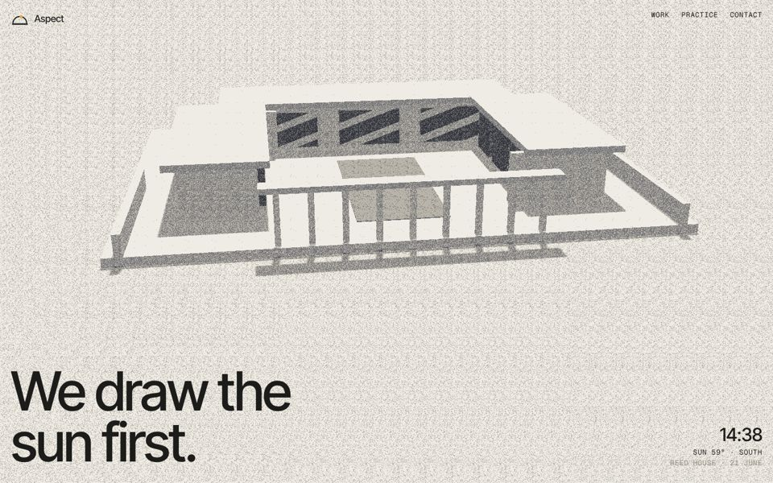
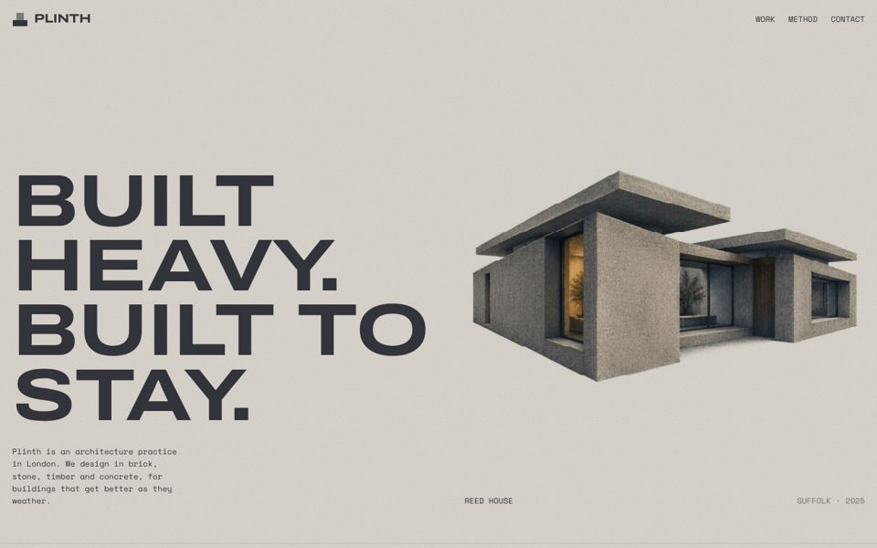
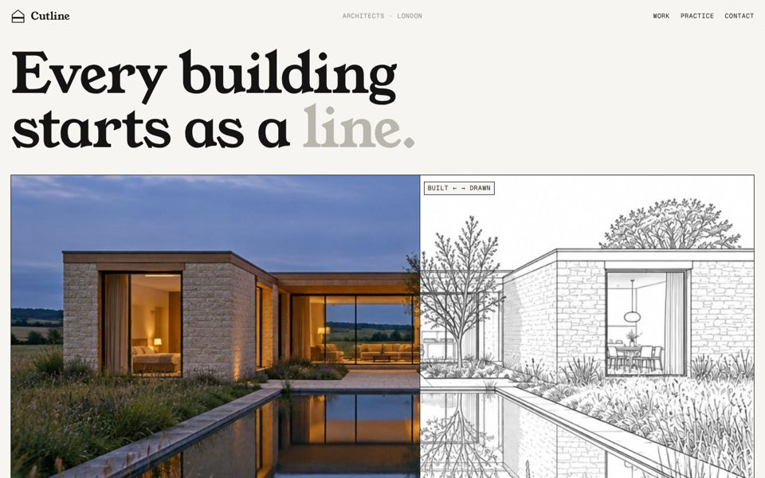

A · Azimuth (picked)Daylight practice. Live grainy 3D house: scroll and the sun crosses it, windows light up at dusk. Projects fly open.

B · PlinthHeavy-materials practice. Every project is a grainy illustration that stacks itself together, photo underneath.

C · CutlineDrawing practice. A cut line turns each drawing into the built photo. Drag to compare on project pages.
All three practices are fictional. Every image is an AI concept render (low-res drafts).